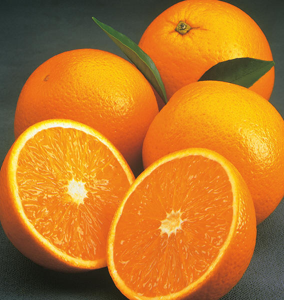
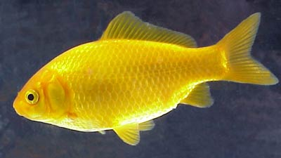
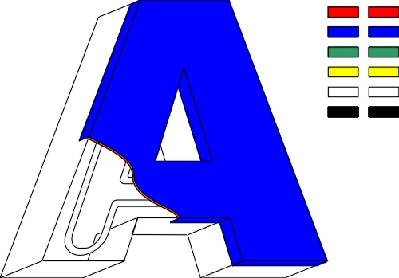

The goal of the demo is to store the color names, images and descriptions into arrays, randomly pick one, set the background color of the page to THAT color, then use document.write statements to dynamically display the correspondng image and text phrase.
To start, you will want to have saved the code of this page and all of the images below to your computer.




If the images above are not dispaying then you did NOT save the images to your computer. If so below are images loaded directly from webdev that you can save to your computer: